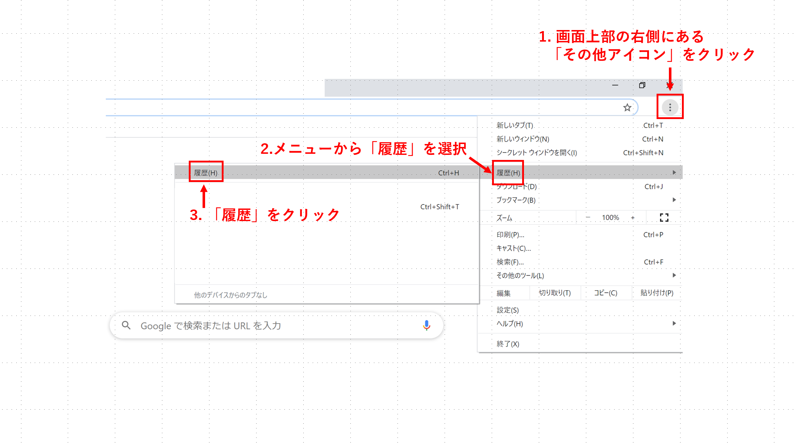
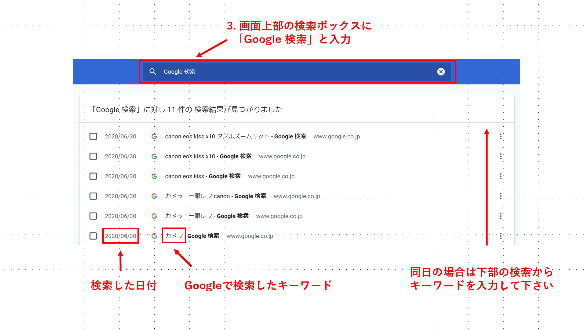
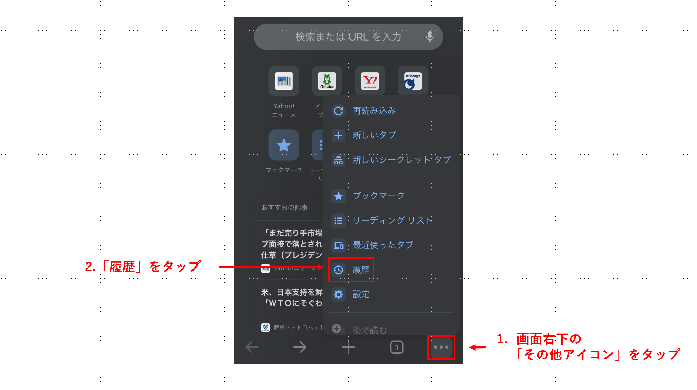
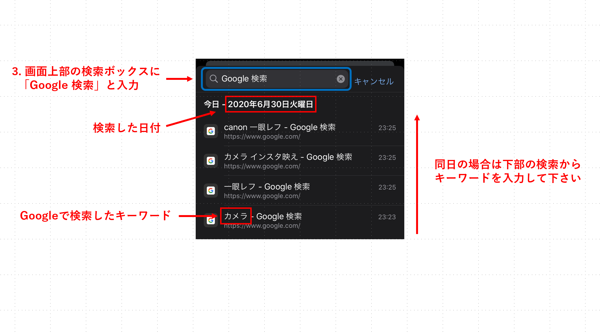
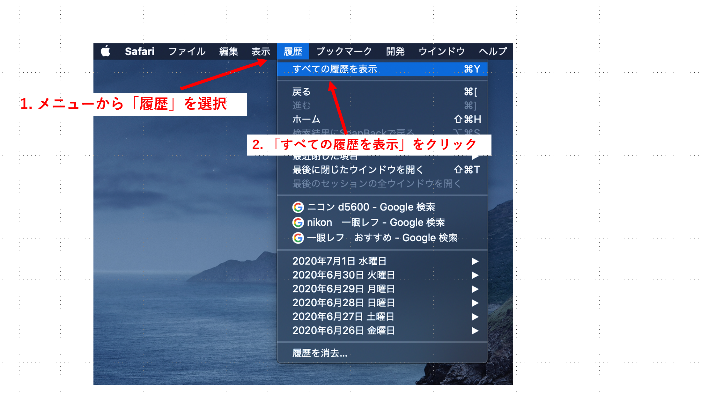
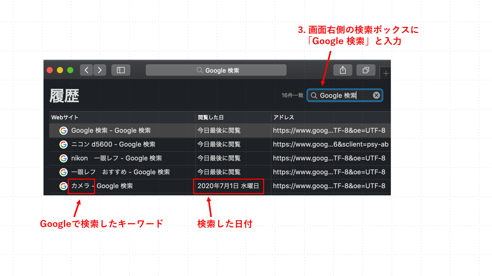
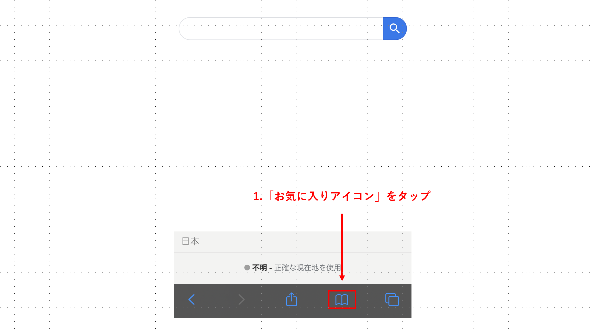
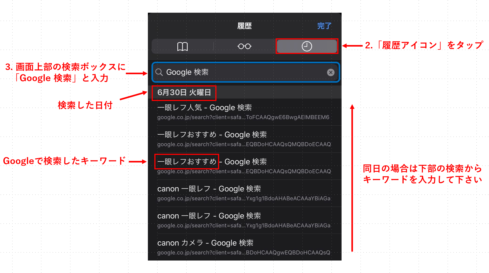

① 下記のリンクから自身のGoogleアカウントでGoogle Chromeにログインしてください．
googleアカウントのログイン
【Windowsの場合】
② 右上のその他アイコンをクリックし，[履歴] にある[履歴] をクリックします．
③ 画面上部の検索ボックスに「Google 検索」と入力します．
日時については，同日の場合は古い順に入力してもらいます．したがって、下から順に入力してください．




【Macの場合】
① MacのSafariアプリケーション で、「履歴」＞「すべての履歴を表示」と選択します.
② ウインドウの右上隅にある「検索」フィールドに「Google 検索」と入力します
日時については，同日の場合は古い順に入力してもらいます．したがって、下から順に入力してください．



